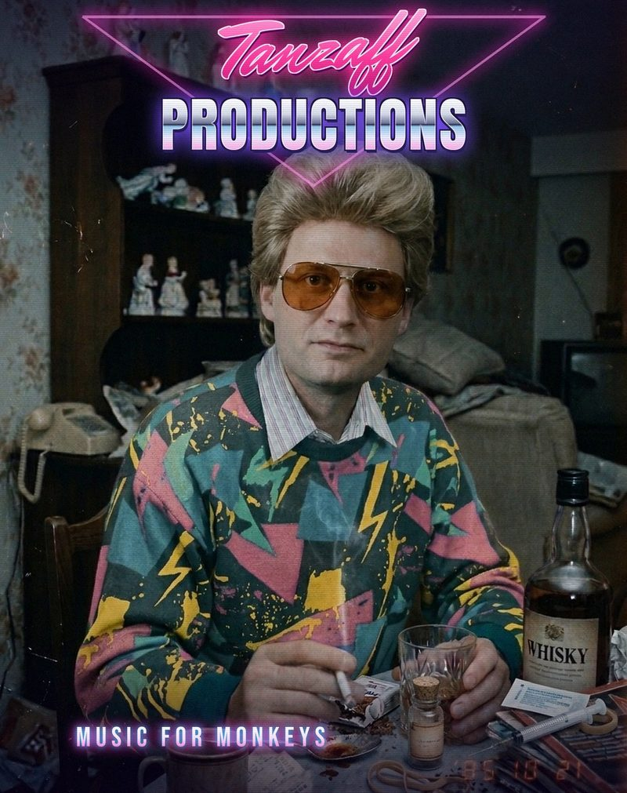

Music for MonkeysGeneva / La Côte
Tanzaff Productions
Electronica built from recorded instruments and samples of the recent past. Sounds for meditating, and for dancing in joy.
Latest release

Featured
About
Tanzaff Productions has been at it since 1985 (at least it feels that way) on a pile of hardware and a short attention span: analog and FM synths, drum machines, a couple of samplers small enough to fit in a bag. Nothing too fancy, but highly effective.
Half the source material was never meant to be music. Swiss TV archive footage, a forgotten documentary, a Dr. Dre acapella that wandered in and refused to leave. All of it gets cut up and sat next to a drum machine until it behaves. Mostly.
Bad company makes good records. Liebi was cut at Lust & Logic Studio with Klanggott on FM synths: Fear & Loathing in Zurich. A few more came out of a marathon jam session in Fribourg, where Regata Collective and the rare synths of the SMEM collection joined in. Pull up a chair, ignore the mess, press play.

All tracks
2026

2019
-
 Light Weight Baby
Dedicated to the beloved Ronnie C.
02:38
Light Weight Baby
Dedicated to the beloved Ronnie C.
02:38
-
 Soviet Christmas Fragment
In Soviet Russia, love is pure.
00:51
Soviet Christmas Fragment
In Soviet Russia, love is pure.
00:51
-
 Tacoma Bridge
Matrix 1000, TX81Z, Minitaur, OP-1 and OP-Z.
03:17
Tacoma Bridge
Matrix 1000, TX81Z, Minitaur, OP-1 and OP-Z.
03:17
-
 Les Romands
Maintenant vous obéissez! On the line between French and German speaking Switzerland.
02:29
Les Romands
Maintenant vous obéissez! On the line between French and German speaking Switzerland.
02:29
-
 Schattenreich
OP-Z, OP-1 and Digitakt.
05:38
Schattenreich
OP-Z, OP-1 and Digitakt.
05:38
2018
-
 Burning Desire
Erotic italo disco, 123 BPM. New mix and master, 2026.
02:52
Burning Desire
Erotic italo disco, 123 BPM. New mix and master, 2026.
02:52
-
 Miss Milk
Made with the OP-Z, OP-1 and Volca Sample.
03:15
Miss Milk
Made with the OP-Z, OP-1 and Volca Sample.
03:15
-
 Peter B.
First jam with the OP-Z, cut over SRF archive footage.
02:27
Peter B.
First jam with the OP-Z, cut over SRF archive footage.
02:27
-
 Communism
A jam.
09:42
Communism
A jam.
09:42
-
 Brainf**k NSFW
Digitakt and OP-1, against footage from Michael Rauch's Don't Mindfuck Me (1990).
01:53
Brainf**k NSFW
Digitakt and OP-1, against footage from Michael Rauch's Don't Mindfuck Me (1990).
01:53
-
 Liebi
Drums, bass and mix by Tanzaff, FM synths by Klanggott. Recorded at Lust & Logic, Zurich.
05:18
Liebi
Drums, bass and mix by Tanzaff, FM synths by Klanggott. Recorded at Lust & Logic, Zurich.
05:18


Collaborations
Made with Lorenzo Pistolesi and Regata Collective. The Universe pieces were recorded on the rare synthesizers of the SMEM collection in Fribourg and posted on the Regata Collective channel.

2020
-
 Ditemi perchè feat. Lorenzo Pistolesi
Synths and vocals by Lorenzo Pistolesi. Synths, mix and video by Tanzaff.
03:25
Ditemi perchè feat. Lorenzo Pistolesi
Synths and vocals by Lorenzo Pistolesi. Synths, mix and video by Tanzaff.
03:25
-
 Universe version 1
Synths and drums by Tanzaff, synths and guitar by Lorenzo Pistolesi, mix by Regata Collective.
19:17
Universe version 1
Synths and drums by Tanzaff, synths and guitar by Lorenzo Pistolesi, mix by Regata Collective.
19:17
-
 Universe part 2 version 1
The sound of the universe, played on the most famous synths of the sixties and seventies.
08:28
Universe part 2 version 1
The sound of the universe, played on the most famous synths of the sixties and seventies.
08:28

Studio
- Synths
- Elektronika EM-26, Oberheim Matrix 1000, Roland JX-8P, Roland Alpha Juno 2, Yamaha TX81Z, Yamaha TX802, Moog Minitaur, Korg Minilogue, Behringer Pro-800, Behringer Pro VS Mini, Behringer Crave, Behringer Edge, Teenage Engineering OP-1, Teenage Engineering OP-Z
- Drums & sampling
- Elektron Digitakt, Korg Volca Sample
- Other instruments
- Lottie Canto Colour Palette (electric kalimba)
- Effects
- Zoom MS-70CDR, Yamaha REV5
- Studios
- Tanzaff Studio, Geneva / La Côte · Lust & Logic, Zurich · the SMEM collection, Fribourg